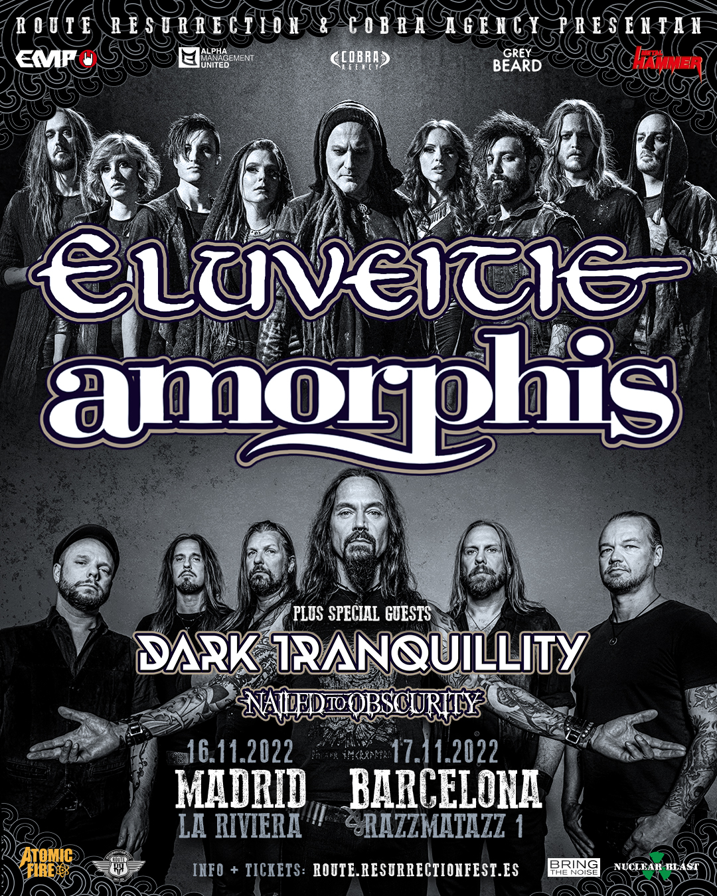
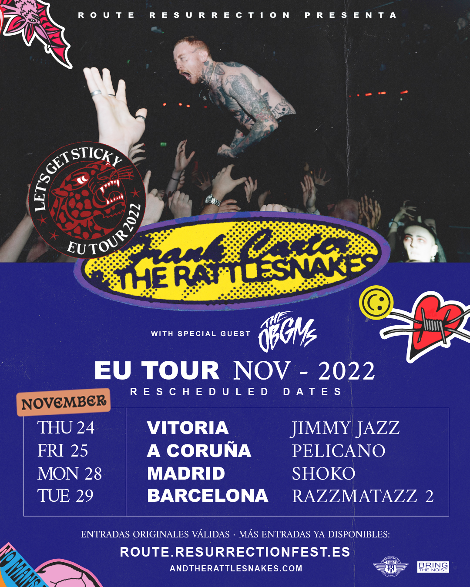
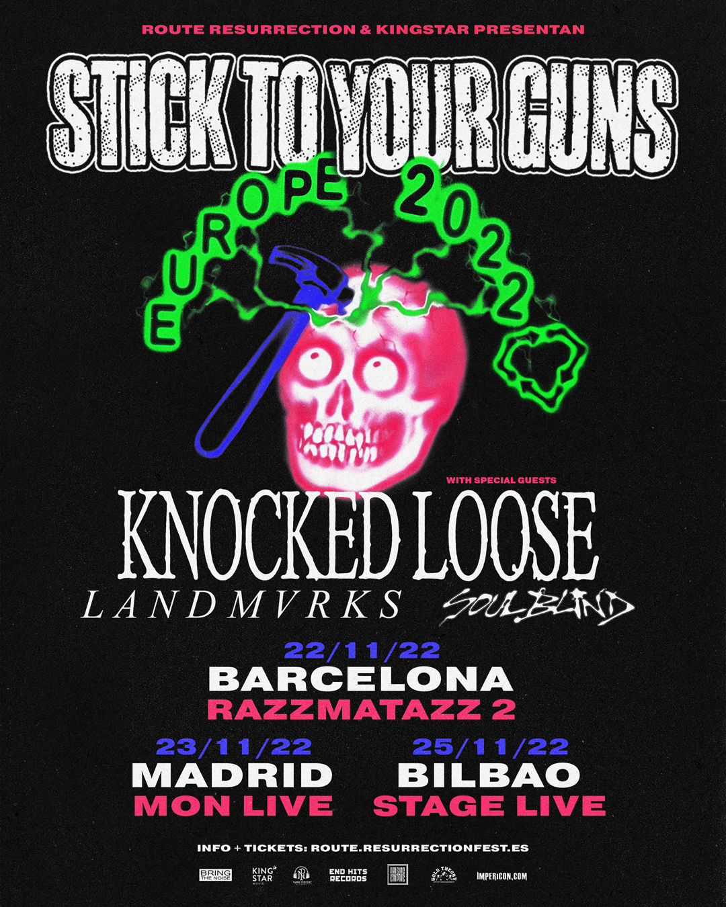
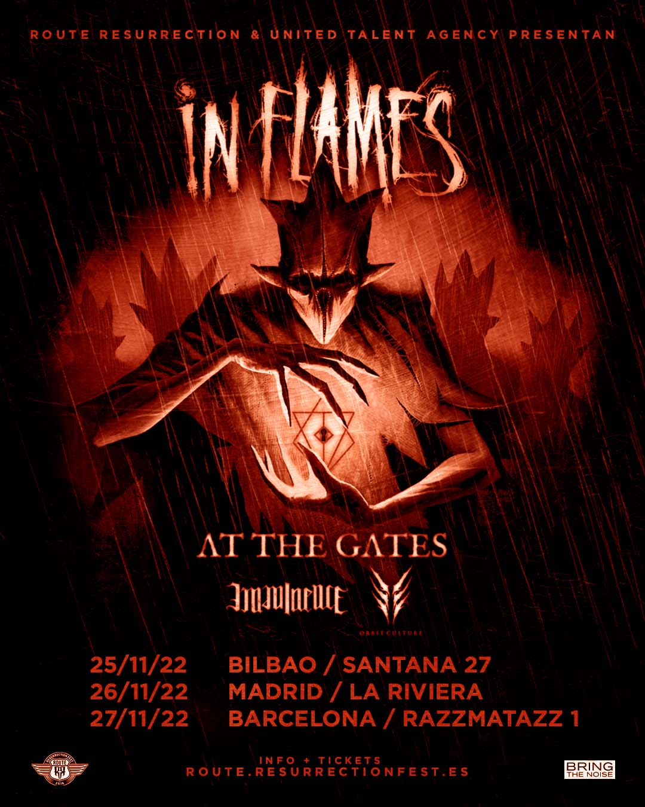
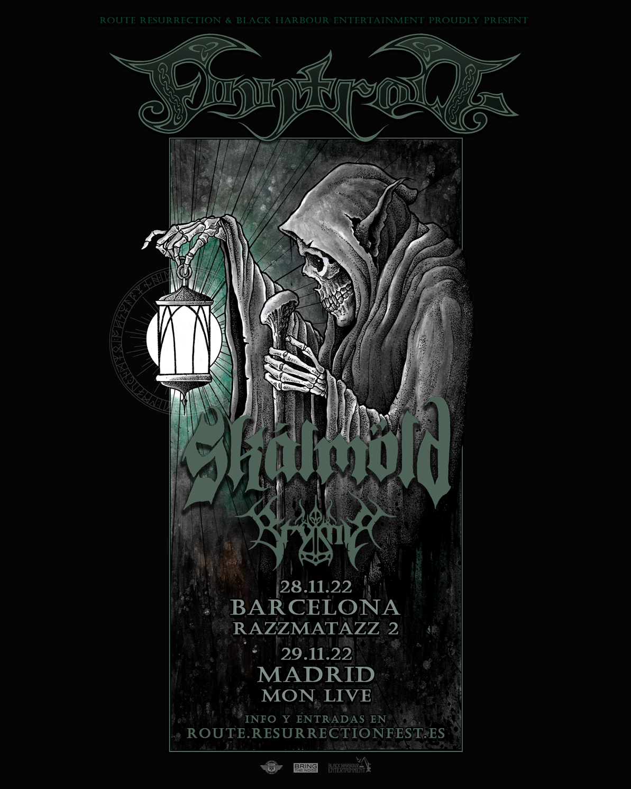
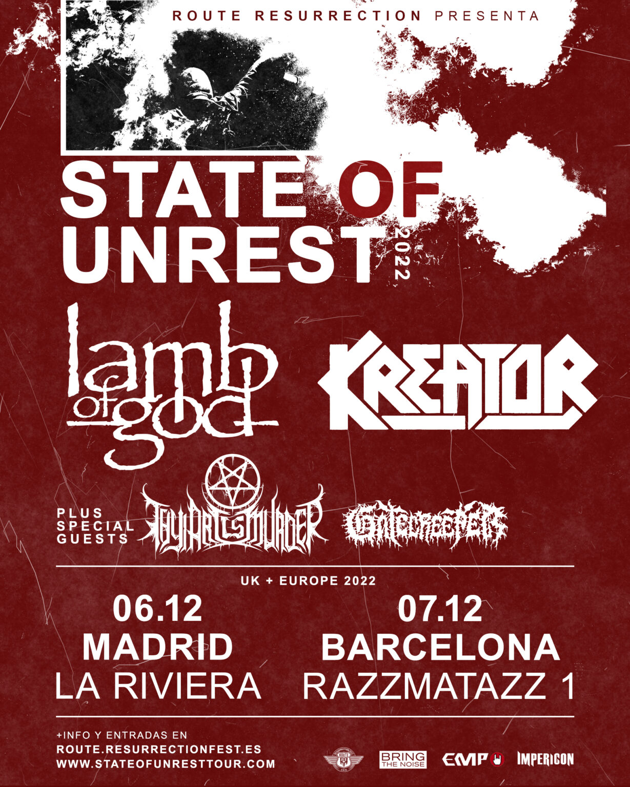
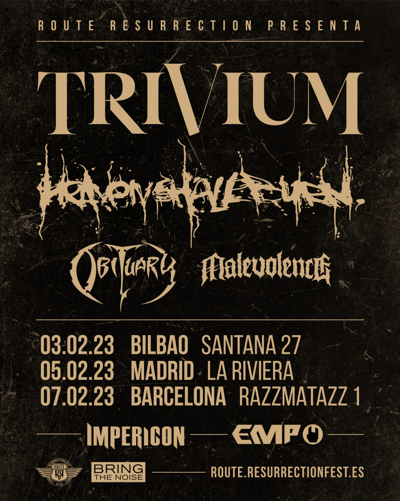
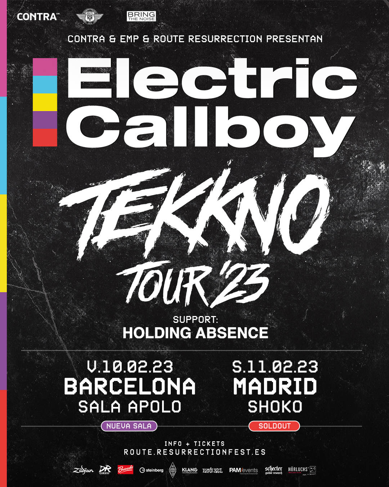
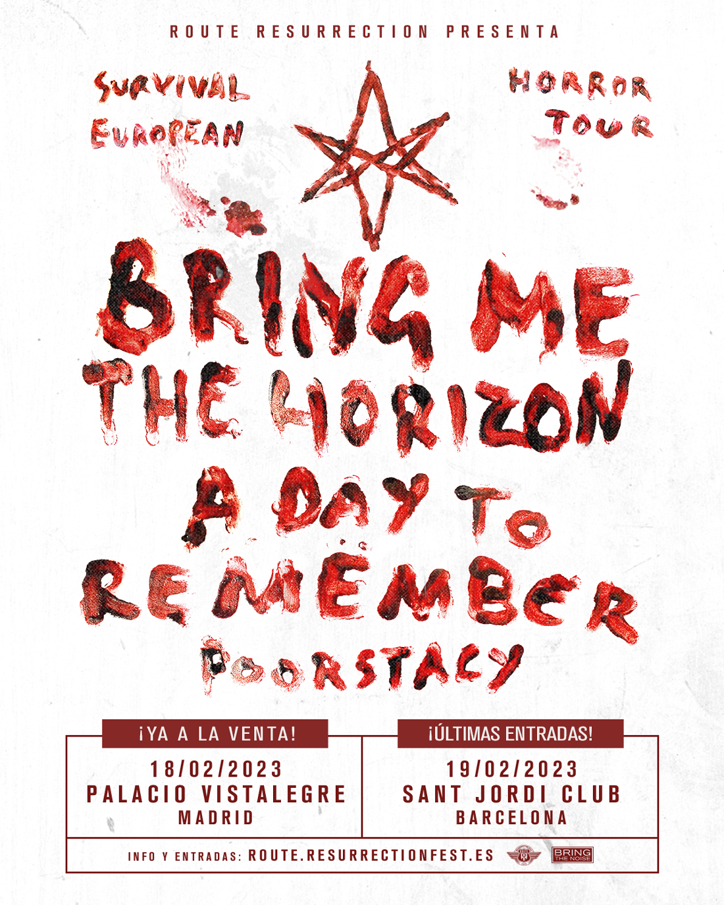

🔥 Nueva gira Route Resurrection: Eluveitie y Amorphis unen fuerzas como cabezas de cartel y estarán acompañados de Dark
Tranquillity y Nailed to Obscurity 🔥
Nos alegra poder anunciar oficialmente esta pedazo de gira para los amantes del folk metal y del death metal melódico.
Tras el exitazo de sus anteriores visitas a España en solitario, han decidido aunar esfuerzos con un pack de bandas genial
que nos deleitarán con una buena sesión metalera a finales de año. Los suizos Eluveitie y los finlandeses Amorphis se
embarcarán en dos conciertos en las grandes capitales y vendrán muy bien acompañados: por un lado por los suecos Dark
Tranquillity y por otro lado los alemanes Nailed To Obscurity. Éstas son las fechas:
16 de noviembre, Madrid, La Riviera
17 de noviembre, Barcelona, Razzmatazz 1
Las entradas estarán a la venta en nuestra web el próximo lunes 1 de agosto a las 10:00 de la mañana. No te puedes
perder esta gira, ¡nos lo pasaremos en grande! ¡Nos vemos allí!

La gira Route Resurrection de Frank Carter & The Rattlesnakes tendrá finalmente lugar en noviembre y con fecha en Madrid
El último disco de Frank Carter con sus Rattlesnakes, “Sticky”, ha sido uno de los mejores del año sin duda alguna y
tenemos muchas ganas de disfrutar de su directo. Debido a la incertidumbre presente en otros países europeos que hace
que la totalidad de la gira del artista esté en riesgo, la banda ha decidido mover todas las fechas a noviembre del
año que viene y añadir una fecha en Madrid.
Los canadienses The OBGMs vendrán como artista invitado.
24 de noviembre de 2022, Vitoria, Jimmy Jazz
25 de noviembre de 2022, A Coruña, Sala Pelícano
28 de noviembre de 2022, Madrid, Shoko
29 de noviembre de 2022, Barcelona, Razzmatazz 2
Las entradas de estos tres conciertos previamente compradas serán válidas automáticamente sin hacer nada por vuestra parte.
En el caso de las entradas de Santiago de Compostela, serán automáticamente válidas para la fecha de A Coruña. Y por supuesto,
si queréis comprarlas, podéis hacerlo en nuestra web. No esperes a que se agoten. ¡Nos vemos allí!

🔥 Stick To Your Guns de gira por España junto a con Knocked Loose, Landmvrks y Soul Blind🔥
Esta nueva gira volverá locxs a lxs amantes del hardcore. Llegará a España en noviembre y tendrá 3 fechas, en Barcelona, Madrid y Bilbao.
Stick To Your Guns es una de las bandas más trabajadas de la escena del hardcore internacional y vendrán a España para ser
cabezas de esta potente gira que hemos preparado para finales de año. Tras dar un bolazo en el Resurrection Fest EG 2022,
los americanos regresan a nuestro país junto a los también increíbles Knocked Loose, quienes también arrasaron este año, Landmvrks y Soul Blind.
Entradas ya a la venta. ¡Nos vemos allí!
ROUTE RESURRECTION 2022 – Stick To Your Guns + Knocked Loose + Landmvrks + Soul Blind:
📅 22 de noviembre de 2022
📍 Barcelona, Razzmatazz 2
📅 23 de noviembre de 2022
📍 Madrid, Mon Live
📅 25 de noviembre de 2022
📍 Bilbao, Stage Live

🔥 🔥 Nueva gira Route Resurrection: In Flames regresan por todo lo alto con At The Gates, Imminence y Orbit Culture🔥
Han pasado 8 años desde su última gira como cabezas de cartel y ya era hora que uno de los estandartes del death metal
mmelódico y del metal escandinavo saliese de gira por Europa. Los gotemburgueses In Flames nos visitarán en España con
tres conciertazos en los que irán acompañado por otras tres bandas compatriotas: los padres del melodic death At The Gates
serán los invitados especiales de esta gira, y el rompedor pack lo terminarán Imminence y Orbit Culture. Éstas son las tres fechas:
Viernes 25 de noviembre, Bilbao, Santana 27
Sábado 26 de noviembre de 2022, Madrid, La Riviera
Domingo 27 de noviembre de 2022, Barcelona, Razzmatazz 1
Las entradas saldrán a la venta en nuestra página web www.route.resurrectionfest.es a las 11:00 del viernes 5 de agosto.
Si eres fan del género, no puedes perderte estos conciertos, ¡serán irrepetibles! ¡Nos vemos allí!

¿A la tercera irá la vencida? ¡Esperemos que sí! Porque tras mover la gira dos veces, la movemos de nuevo para que
los finlandeses Finntroll visiten España de nuevo para presentar su último disco “Vredesvävd”. La fiesta de
“folk metal” será completada por los islandeses Skálmöld y Brymir, así que si quieres pasar una noche divertida y
llena de música nórdica… ¡es tu oportunidad!
NUEVAS FECHAS:
28 de noviembre de 2022, Barcelona, Razzmatazz 2
29 de noviembre de 2022, Madrid, Mon Live
Las entradas de estos dos conciertos previamente compradas serán válidas automáticamente sin hacer nada por vuestra parte.
En caso de imposibilidad de asistir, enviad un email a info@entradasatualcance.com para la devolución, tenéis 14 días desde hoy.
Y por supuesto, si queréis comprarlas, podéis hacerlo en nuestra web www.route.resurrectionfest.es. No esperes a que se agoten.
¡Nos vemos allí! 😈

Aunque ya teníamos muchas ganas de vivir conciertos con normalidad, para garantizar que toda la gira europea
se pueda realizar con normalidad, finalmente esta gira visitará España en 2022. Sin duda será una de las más
brutales del año, y tenemos muchas ganas de ver a estos dos gigantes del metal como son Lamb of God y Kreator
que se unen en el “State of Unrest Tour”, gira en la que ambos son cabezas de cartel. Debido al triste fallecimiento
del cantante de Power Trip, Riley Gale, se unirán dos nuevas bandas al cartel. Por un lado, unos grandes conocidos del
festival, los australianos Thy Art Is Murder, y por otro los brutales Gatecreeper, que si os gusta el death metal de la
vieja escuela o el grindcore, os encantarán.
6 de diciembre, Madrid, La Riviera
7 de diciembre, Barcelona, Razzmatazz 1
Las entradas de estos dos conciertos previamente compradas serán válidas automáticamente sin hacer nada por vuestra parte.
Y por supuesto, si queréis comprarlas, podéis hacerlo en nuestra web www.route.resurrectionfest.es. No esperes a que se agoten.
¡Nos vemos allí!

🔥 NUEVAS FECHAS PARA LA GIRA ROUTE RESURRECTION DE TRIVIUM Y HEAVEN SHALL BURN 🔥
Trivium y Heaven Shall Burn estarán acompañados por Obituary y Malevolence como invitados especiales de su gira Route Resurrection. 🔥
Es uno de los Route RF más esperados ya que tanto Trivium como Heaven Shall Burn son dos bandas muy queridas por nuestro festival y
se han unido para su mayor gira hasta la fecha y en las mayores salas de nuestro país.
Además, estarán acompañados por Obituary y Malevolence, quienes cierran el cartel de esta pedazo de gira de 3 fechas.
Estas son las fechas que debéis anotar:
🗓 3 de febrero de 2023 – Bilbao Santana 27
🗓 5 de febrero de 2023 – Madrid La Riviera
🗓 7 de febrero de 2023 – Barcelona Razzmatazz
Posicionados como uno de los referentes del metalcore y death metal melódico alemán, Heaven Shall Burn regresarán con esta gira
a los escenarios tras una merecida pausa y para celebrar su 25º aniversario con el lanzamiento de su último trabajo doble
«Of Truth And Sacrifice». A su vez, Trivium también celebrará su 20º aniversario presentando «What The Dead Men Say» y su
reciente disco «In The Court of the Dragon».
Las entradas de estos tres conciertos previamente compradas serán válidas automáticamente sin hacer nada por vuestra parte.
Ya están a la venta en esta página, así que… ¡nos vemos allí!

🔥 Nueva gira Route Resurrection: Electric Callboy por fin se traen su fiesta a España en 2023 🔥
Los alemanes no sólo causarán sensación en el escenario principal de nuestro festival. Desde su última visita, el grupo ha
subido en popularidad, en temazos, en diversión y en espectáculo, y es por eso que nos congratula poder anunciar (esta vez sí)
su primera gira como cabezas de cartel por nuestro país, su “Tekkno Tour ‘23”. Electric Callboy sólo nos visitarán en dos fechas,
pero serán muy intensas y caen en fin de semana, así que no hay excusa para no ir a verles. ¡Anotad las fechas, que además vendrán
con dos bandas invitadas: Holding Abscence y en breves anunciaremos otra!
Viernes 10 de febrero de 2023, Barcelona, Apolo 1 (nueva sala)
Sábado 11 de febrero de 2023, Madrid, Shoko (sold-out)
Las entradas compradas para Razzmatazz 2 en Barcelona son automáticamente válidas para Apolo 1, la nueva sala tras el upgrade. Os esperamos allí.

🔥 Bring Me The Horizon actuarán en España en 2023 con la mayor gira de su historia 🔥
Bring Me The Horizon finalmente actuará en 2023 con su gira Route Resurrection que pasará por España.
Este es el comunicado de la banda,
Las fechas serán las siguientes:
18 de febrero de 2023, Madrid, Palacio Vistalegre – ENTRADAS AGOTADAS. LISTA DE ESPERA
19 de febrero de 2023, Barcelona, Sant Jordi Club – ENTRADAS AGOTADAS
Por ahora podemos confirmar que tanto A Day to Remember como Poorstacy estarán en el cartel como invitados de la gira.
Tras el arrollador éxito de su último trabajo “Post Human: Survival Horror”, con himnos como “Teardrops”, “Ludens”,
“Parasite Eve”, “Obey” o “Kingslayer”, y el primer adelanto de su nuevo trabajo, “DiE4u”, vuelven de gira por España
tras 7 años de la anterior, la cual agotó entradas con meses de antelación, y sin duda, estamos seguros de que ahora
repetirán éxito en estos recintos tan grandes.
Las entradas de estos conciertos previamente compradas serán válidas automáticamente sin hacer nada por vuestra parte.
Ya podéis comprar las entradas ya en nuestra web. No esperes a que se agoten. ¡Contamos con vosotr@s para hacer historia! ¡Nos vemos allí!
Para viajes organizados al festival, mira nuestra sección de viajes. Para buses de línea normales, las compañías que trabajan en Galicia son Monbus y Arriva las cuáles tienen sede en las principales ciudades, coincidiendo con los principales aeropuertos gallegos. Para más información, pondremos horarios e itinerarios de viajes en Galicia más adelante. Para otros, haz click aquí: ARRIVA y MONBUS.
Te aconsejamos que hagas tu propio itinerario detallado desde tu ciudad pinchando aquí. Te proponemos también que intentes llegar el martes 28 de junio si no estás en las zonas de descanso oficiales y el miércoles 29 de junio si estás en alguna de estas zonas (Resucamp, Beachcamp y Glamping), para evitar colas en los accesos a la ciudad. Cuando llegues a Viveiro, permanece atento y sigue las señales puestas por todo el pueblo con las indicaciones del festival.
¿Buscas gente para venir al festival? ¿No hay un viaje organizado desde tu ciudad? Formar parte del carsharing de Blablacar o Amovens es muy fácil. ¡No te quedes sin venir al Resurrection!
La compañía de trenes que opera en la Viveiro es F.E.V.E. En feve.es sabrán orientarte para encontrar el mejor viaje al mejor precio con destino Viveiro desde cualquier punto de la costa entre Ferrol y Bilbao. Para consultar los horarios, incluso desde tu móvil, tablet o similar haz click aquí.
Los aeropuertos más cercanos a Viveiro son: A CORUÑA (LCG), distancia 197 km hasta Viveiro. SANTIAGO DE COMPOSTELA (SCQ), distancia 147 km hasta Viveiro. AVILÉS (OVD), distancia 155 km hasta Viveiro. Más información en: www.aena.es Numerosos vuelos y compañías, algunas low-cost, proponen viajes a precio muy ventajoso como VUELING o RYANAIR entre otros. Habrá buses desde los aeropuertos gallegos. Más info en este enlace.
Los menores de 12 años inclusive podrán entrar gratis acompañados por un adulto responsable y con una documentación firmada por los padres/tutores legales que está ya disponible en esta web. El resto de menores, deberán tener entrada y también estar acompañados por un adulto y tener dicha autorización. Con 16 y 17 años, no es necesario que un adulto los acompañe. Para que esto sea posible es necesario presentar a la entrada del recinto, la siguiente documentación: La autorización de padre / madre o tutor legal del menor debidamente cumplimentada que se podrá descargar en el siguiente enlace. Son tres copias: una para el titular, otra para entregar en taquilla al recoger la pulsera y otra para la seguridad de la puerta. La del titular se presentará cada día para entrar en el recinto. En todo momento tanto el acompañante como el menor deberán llevar su DNI / Pasaporte, por si fuese requerido por parte del personal de la organización, para acreditar su identidad. En el caso de ciudadanos extranjeros deberán aportar los documentos oportunos de su país de origen. Tanto la autorización de asistencia como el certificado de responsabilidad podrán recogerse y cumplimentarse a la entrada del recinto en una caseta de venta de entradas los días del festival. Para evitar aglomeraciones, inconvenientes y sorpresas de última hora, desde la organización recomendamos descargar los documentos desde nuestra pagina web y rellenarlos con calma, asegurándose de cumplimentar todos los requisitos. La Organización informa que la legislación vigente prohíbe expresamente la venta de alcohol a los menores de edad. Os recordamos que el menor deberá en todo momento llevar su DNI. La falta de cumplimiento de los requisitos anteriores, serán motivo de expulsión del recinto y no dará derecho a reembolso alguno del precio abonado por la entrada del menor. Tendrán la entrada gratuita todos los menores de 12 años inclusive. Esto incluye el festival y el área Pandemonium si los tutores tienen dicho pase, pero no las zonas de descanso de pago.
¿Cómo hago para llegar a Viveiro?
Por un lado, tenemos viajes organizados desde diferentes puntos de España y Portugal. Además, hay numerosas maneras de llegar a Viveiro.
Aquí tienes toda la información
sobre cómo llegar a Santiago en diferentes vías de transporte (avión, tren, bus…).
¿Hay un viaje organizado desde donde vivo?
Compruébalo tú mismo en nuestra sección de viajes organizados.
No hay ningún viaje organizado o me es muy caro, ¿puedo compartir coche con alguien?
Sí. También habrá mucha gente compartiendo coche en servicios de “carpooling” como BlaBlaCar o Amovens.
¿Dónde me dejan los viajes organizados en Viveiro?
Los viajes organizados tendrán 3 paradas en Viveiro. Una será en la zona de descanso A (Covas), donde tendrán un sitio especial para ellos,
otra en el Resucamp y otra en el Beachcamp/Glamping.
¿Hay algún tipo de aparcamiento habilitado para estacionar vehículos?
Puedes aparcar en los alrededores de Viveiro (no en los alrededores del recinto, que está prohibido). Para autocaravanas y
furgonetas habrá una zona disponible en la playa
de Area, cerca del Beachcamp y el Glamping, y la zona de descanso B en el mirador de San Roque.
Si tienes movilidad reducida, habrá una pequeña zona habilitada para ti. Tienes toda la información aquí.
¿A qué hora se abren las puertas del recinto?
El miércoles (fiesta de presentación) las puertas abrirá as las 16:30 y el resto de días a las 13:30. Tienes aquí los horarios oficiales.
¿Qué hago con mi entrada? ¿Cómo obtengo mi pulsera?
Puedes, o bien presentar tu entrada en el móvil si no tienes la pantalla rota o es difícil leerla por cualquier motivo, o bien puedes traer
tu entrada impresa,
aunque no lo recomendamos para ahorrar papel. Además necesitarás tu DNI o pasaporte (documento de identidad válido).
Al presentarla, se te pondrá en persona tu pulsera (no se dan en mano y no se pueden recoger para otra persona).
¿Dónde puedo recoger mi pulsera?
Dependiendo del tipo de entrada que tengas tendrás que validarla en alguno de estos dos sitios para recoger tu pulsera:
Zona de validación:
– Abonos
– Entrada de día
– Pandemonium
– Menores
Taquilla:
– Censados en Viveiro
– Invitados y sorteos
– Prensa
– Venta de entradas
Los asistentes que cuenten con entrada de zona de descanso Resucamp o Beachcamp podrán validar sus abonos directamente en dichas zonas a su llegada.
¿Cuándo puedo recoger mi pulsera?
Los horarios para validar tus entradas y recoger la pulsera para poder acceder al recinto son:
Pulseración:
– Miércoles: 11:00 – 1:00
– Jueves: 12:00 – 1:30
– Viernes: 13:00 – 00:15
– Sábado: 13:00 – 1:15
– Domingo: 13:00 – 1:00
Taquilla:
– Miércoles: 11:00 – 1:30
– Jueves: 12:00 – 3:15
– Viernes: 13:00 – 3:15
– Sábado: 13:00 – 3:30
– Domingo: 13:00 – 3:30
¿Y si estoy invitado o tengo una acreditación de prensa?
También hay una caseta en la zona de taquilla. Recuerda llevar impresa o en el móvil tu invitación y tu documentación.
¿Puedo intercambiar la pulsera con alguien?
No, son intransferibles. No puede ir una persona un día y otra persona otro, porque la pulsera no se puede quitar ni romper.
¿Qué pasa si rompo la pulsera?
En caso de rotura de pulsera, no se dará otra.
¿Se puede salir y entrar del recinto? ¿Y con las entradas de un día?
Sí, al tener la pulsera podrás hacerlo sin problema, tengas abono de 4 o 5 días o entrada de 1 día individual.
¿Habrá entradas a la venta en taquilla?
Sí, pero solo de la fiesta de presentación. Los abonos y las entradas para el resto de días ya están agotados.
¿A qué da acceso la entrada Pandemonium?
Da acceso a todo el festival como un abono normal y además a la zona VIP, llamada Pandemonium.
He vendido una de mis entradas en la plataforma de reventa ética ¿cómo me aseguro de cuál es?
En el recibo del reembolso que te vino adjunto en el correo de confirmación de la venta que te envió la ticketera, te viene el localizador
de la entrada vendida para que puedas saber cuál es.
Me han cedido una entrada ¿cómo me aseguro de no tener problemas para acceder al festival?
Os recomendamos que sólo aceptéis entradas de personas de confianza ya que no se puede comprobar que alguien no haya hecho copias de una
misma entrada y las haya circulado por ahí.
Si os han cedido una entrada, para mayor seguridad deberíais de llevar una copia del DNI de la persona titular.
No puedo ir al festival y quiero regalarle mi entrada a un/a amigo/a o familiar ¿cómo lo puedo hacer?
Podrías hacer una cesión de tu entrada aportándole al nuevo asistente una copia de tu DNI, como titular de la entrada. Así, podrán evitar
problemas en el acceso al festival.
Os recordamos que estas cosas las hagáis sólo con personas de confianza.
¿Son válidas las entradas que compré para una de las ediciones aplazadas?
Sí, las entradas compradas para alguna de las ediciones aplazadas son válidas automáticamente para este año. Lo importante es el código
de la entrada, no el año que pone en ella.
¿Para qué días es válido mi abono comprado para otro año?
Los abonos de las ediciones pasadas de 3 y 4 días ahora son de 4 y 5 días, respectivamente. Se ha añadido el domingo como día extra a
todas las personas con abono, de forma
gratuita y automática, por lo que no tenéis que hacer nada más. Si vuestra entrada no incluía el miércoles, seguirá sin incluirlo este año.
¿Qué pasa si no le di a «mantener mis entradas» en aquel email que mandasteis hace meses?
No pasa nada, valen igual.
LAS ZONAS DE DESCANSO Y LAS DUCHAS CERRARÁN EL LUNES 4 A LAS 12:00 HORAS DEL MEDIODÍA
¿Dónde puedo conseguir entradas para las zonas de descanso del festival?
Tenemos varias opciones para dormir: zonas de descanso libres, Resucamp, Beachcamp y Glamping. Menos la zona de descanso libre,
que está incluida en todas las entradas,
el resto son de pago y se han de comprar a parte. Las de pago estarán dotadas de todos los servicios: duchas, cafetería,
seguridad, etc. Este año no habrá un supermercado
dentro de la zona de decanso A pero seguirán estando disponibles los supermercados habituales de toda la vida en las cercanías
Recuerda hacer un uso cívico de las instalaciones, respetar a tus vecinos y tira la basura en los contenedores habilitados para ello.
Si voy a la zona de descanso de pago o al glamping, ¿qué necesito para poder entrar?
Necesitarás el número de reserva y el DNI del titular.
¿A partir de qué día se abren las zonas de descanso y el Glamping?
Las de pago abren desde las 12:00 h del miércoles 29 de junio hasta las 12:00 h del lunes 4 de julio. La gratuita abre desde
el lunes 27 de junio hasta el mediodía del lunes siguiente, día 4 de julio.
¿Puedo acceder a las zonas de descanso con sillas, mesas o toldos?
Sí, pero has de respetar el espacio disponible en tu parcela y no invadir caminos, salidas de emergencia… Si tienes alguna duda,
dirígete al personal de la zona de descanso correspondiente.
¿Puedo entrar con mi caravana a la zona de descanso?
No, sólo en la zona de descanso B.
¿Puedo llevar comida y bebida a la zona de descanso?
En la zona de descanso sí está permitida la entrada de comida y líquidos.
¿Puedo dejar cosas de valor en la acampada?
No lo recomendamos. Contaremos con seguridad en la entrada pero es mejor no dejar nada de valor.
¿Dónde puedo cargar mi móvil en las zonas de descanso?
Habrá un servicio de recarga con baterías portátiles en nuestra zona de descanso A, además del recinto del festival.
Soy menor de edad, ¿puedo ir al festival?
Sí, puedes ir pero con ciertas condiciones explicadas en la política de menores de la página de información. Deberás cubrir
un permiso y tener un adulto responsabilizándose de ti si tienes menos de 16 años. Dicho adulto puede responsabilizarse de
más de un menor. Ten en cuenta que si vas a las zonas de descanso de pago, necesitas otro impreso (está en la misma página web).
¿Los menores de edad necesitan entrada? ¿Qué necesitan para entrar?
Los menores que tengan 12 años inclusive durante las fechas del festival no pagan entrada. Los menores de 16 años deberán
acudir siempre acompañados por un adulto responsable y con una autorización firmada por la madre / padre o tutor/a legal.
Los menores con edades de 16 y 17 años deberán acudir con una autorización firmada por la madre/padre o tutor/a legal sin necesidad de ir acompañados.
Voy como acompañante de un menor, ¿qué tengo que llevar?
Tendrás que llevar dos copias de la hoja de menores cubierta con antelación para evitar colas (puedes descargarla aquí)
y con el DNI del menor o el libro de familia.
Soy nuevo, ¿qué necesito llevar al festival?
Tus documentos, ropa, aseo y dinero o/y tarjeta. Lleva crema solar, posiblemente la necesites, y también un chubasquero,
porque también puede que te mojes. Traete el cargador del móvil si no quieres estar desconectado o una batería recargable.
Unos tapones o cascos te ayudarán en caso de que el volumen de los conciertos sea demasiado alto para ti o por si hay vecinos molestos a la hora de dormir.
Si vas de camping: tienda y esterilla, quizás con un saco de dormir.
Si te gusta la playa, lleva una toalla y bañador. Un baño mañanero en nuestros arenales ayuda a recuperar energías tras una noche de música.
Por último, ¡ganas de festival!
¿Cómo pago dentro del recinto?
La moneda oficial del festival son los Tokens. Estos se compran en unas casetas disponibles en el recinto y a través de la promoción
online en nuestra web (limitada).
Con ellos se podrá pagar en las barras y como novedad este año en los puestos de comida. Será la única manera de pagar en esos sitios.
En la zona de merchandising se pagará en efectivo o tarjeta.
Nota: los tokens que no se usen no se pueden volver a cambiar por dinero en efectivo.
¿Habrá cajeros dentro del recinto?
Este año habrá un cajero de Abanca, y tanto en taquilla como en la zona de tokens podrás hacer pagos con tarjeta.
Te recomendamos de todas maneras coger dinero antes de subir si no llevas tarjeta.
¿Qué puedo hacer por las mañanas antes de los conciertos?
Pues además de poder disfrutar de cualquiera de las dos playas cercanas (Covas y Area), tienes numerosos restaurantes y
bares con comida típica (marisco, pulpo, pinchos, etc.), buenos vinos y cerveza, y sobre todo, puedes conocer toda la hospitalaria comarca de Viveiro.
¿Puedo entrar con comida y/o bebida al recinto de conciertos?
No está permitido entrar con bebida. En diferentes localizaciones del recinto encontrarás stands en los que podrás
adquirir todo tipo de comida y bebida. Además, habrá fuentes de agua gratis para recuperarse de cada concierto, estará indicado en el mapa.
¿Hay comida vegetariana/vegana o especial sin gluten? ¿Y cerveza sin alcohol?
Sí, hay puestos con comida vegana y también para celíacos e intolerantes a la lactosa. Además, contamos con cerveza Estrella Galicia sin gluten y 0,0º.
¿Qué está prohibido introducir en el recinto?
No se puede introducir:
Objetos cortantes y punzantes, y armas de cualquier tipo
Cinturones de balas, cuernos, accesorios con pinchos grandes, cadenas grandes, candados o accesorios que puedan utilizarse como arma
Bengalas, petardos o demás elementos de artificio
Palos selfie o trípodes
Cámaras profesionales de foto y/o video
Botellas, vidrio, petacas, camelbaks, tapones de botella
Sustancias ilegales
Sillas, colchonetas
Bicicletas, skates o similares
Linternas, láseres
Instrumentos musicales
Animales, excepto perros guía
¿Qué hacer en caso de desalojo?
Localiza la salida de emergencia más cercana, están señalizadas con tela amarilla.
Controla tus pertenencias.
Haz caso de las recomendaciones del personal de seguridad.
Cuando abandones el recinto, hazlo con paciencia y de manera ordenada, no todos a la vez.
¿Qué debo hacer si veo a alguien intentando robar o provocando algún tipo de altercado?
Ponte en contacto con la seguridad del recinto, que estarán uniformados con un distintivo especial.
Tengo movilidad reducida, ¿puedo acudir al evento?
Sí, hay una zona especial para ello. Envía un email a accesibilidad@resurrectionfest.es para más información.
Necesitarás acreditar la movilidad reducida ya sea con una tarjeta de aparcamiento o un informe médico.
¿Puedo entrar con mi cámara de fotos al recinto?
Podrás en caso de que no sea una cámara réflex/profesional o estés acreditado para poder usarla.
No podrás entrar con una cámara de este tipo si no cumples una de las dos condiciones.
Cámara digital o GoPro, sí se permiten.
¿Dónde puedo ver los planos del recinto para ubicarme?
En nuestro mapa oficial ( aquí).
Necesito ayuda médica durante el festival, ¿qué hago?
Acude de inmediato a la zona de enfermería. Localízala en nuestro mapa.
¿Y si pierdo algo, a quién pregunto?
En la taquilla podéis preguntar por los “objetos perdidos”. También recomendamos guardar en buen lugar objetos de
valor o documentación y no dejar nada en la acampada que sea susceptible a hurto. Si encuentras algo, por favor,
te agradecemos que lo deposites en esta zona. Los objetos encontrados se dejarán en la Policía Local de Viveiro en los siguientes días.
¿Habrá taquillas para guardar cosas en el festival?
Sí, tenemos un servicio de lokers/taquillas para guardar pertenencias dentro del recinto del festival.
Estas se adquieren en nuestra página web aquí o en el propio festival si queda alguna libre, aunque están muy solicitadas.
Después de pagar por la reserva de los lokers, os llegará un tickets con los códigos necesarios que tendréis que enseñar para
que os den las llaves del vuestro. Estas taquillas no tienen enchufes ni conexión a la red eléctrica.
¿Es seguro llevar mochila en el festival?
Recomendamos que cuando haya aglomeraciones llevéis la mochila por delante para evitar robos y rajaduras de mochilas.
Si veis algo sospechoso al respecto, avisad a seguridad.
Con tanto concierto y tanto mosh quiero descansar sin salir del recinto, ¿puedo hacerlo?
Habrá área de descanso, y además tendréis césped y bancos por diferentes zonas del recinto para tomarte un respiro.
Quiero comprar merchandising de mi grupo favorito que toca en el festival. ¿Puedo hacerlo?
Sí, casi todos los grupos tendrán merchandising oficial en los puestos del mercado del festival, pero por lo general
sólo los días en los que tocan, y a horas tempranas.
La mayoría recogen no muy tarde para poder irse y es probable que ya no estén al final del día de actuación.
Por supuesto, habrá merchandising del Resurrection Fest hasta acabarse existencias, todos los modelos y tallas actuales, incluidas versiones para chica.
¿Habrá firmas de discos durante el festival?
Si, los horarios de dichas firmas se publicarán durante los días previos al festival. Estad pendientes a nuestras
redes sociales y a nuestra web. Habrá una zona sólo para eso en el recinto. Si te interesa, haz cola y podrás
llevarte unas firmas de tus artistas favoritos.
Se han acabado los conciertos del festival y tengo ganas de marcha. ¿A dónde voy?
Os recomendamos ir a los bares y pubs de Viveiro que ofrecen fiesta hasta última hora de la noche. Sigue la marabunta de gente o pregunta y los descubrirás.
¿Hay zonas de surf en Viveiro?
Sí, hay mucha afición por el surf e incluso escuelas de surf. Tenemos playas en Viveiro o Xove (Esteiro)
con buenas olas. Mira nuestra web y conoce esta bella localidad gallega.
Tengo una duda que no está aquí, ¿a quién pregunto?
Puedes preguntar a través de las redes sociales y te responderemos lo antes posible, aunque lo más seguro es que nos envíes un
email a contact@resurrectionfest.es. También puedes preguntarle a los miembros del staff que veas en el recinto y quizás puedan ayudarte.
¿Habrá restricciones de algún tipo por el covid?
Se seguirá la legislación actual, la cual a día de hoy no tiene ninguna restricción activa más que el uso de
mascarillas en transportes públicos (si usáis los buses).
Consejos:
Guarda bien siempre tus objetos de valor.
Respeta a tus vecinos en la acampada (no hagas a otros lo que no quieras que te hagan a ti).
Lleva ropa cómoda y todo lo necesario para disfrutar de un festival.
Usa los contenedores que hay por todo el recinto y reutiliza los vasos del festival.
Respeta a los grupos: si no te gusta un grupo o la actuación, no los veas, pero deja que quien quiera verlo lo haga.